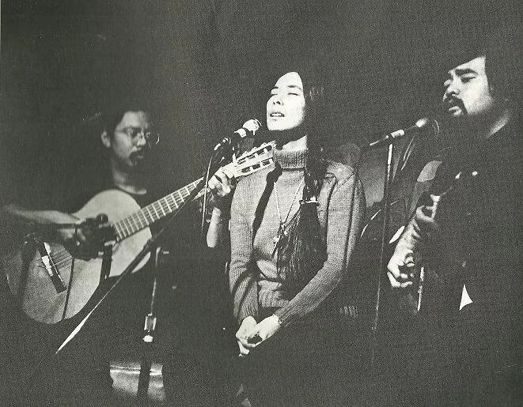

CSU East Bay · Music Department
MUS 302 · What to Listen for in Music
Module 4: Asian American Traditions · Listening Guide · Track 1 of 5
Track 1 Chris Iijima, Nobuko Miyamoto, and "Charlie" Chin, "We Are the Children" (1973)

Context
Three musicians, three biographies, one album
The three musicians on this recording came to it from three different musical and political starting points, and the album they made together was the first of its kind in the United States. was a 24-year-old Japanese American from Manhattan's Upper West Side, the son of activist parents (his father Takeru a veteran of the all- 442nd Regimental Combat Team, his mother Kazu one of the founders of the East Coast organization Asian Americans for Action), a recent Columbia graduate, and a longtime participant in the campus anti-war movement. was a 33-year-old Japanese American singer-dancer, a former professional Hollywood and Broadway performer (The King and I in 1956, Flower Drum Song on Broadway in 1958, the film West Side Story in 1961, in which she played the Shark girl Francisca), who had walked away from a successful entertainment career to do documentary film work on the and the Young Lords in New York. She had been incarcerated with her family during the war, starting as a two-year-old at the Santa Anita racetrack assembly center. was a 28-year-old Chinese American multi-instrumentalist from Queens, of Cantonese and Trinidadian Chinese heritage, who had grown up in the early-1960s Greenwich Village folk scene and had spent the late 1960s touring nationally with the rock band Cat Mother and the All Night News Boys (whose first album was produced by Jimi Hendrix).
Iijima and Miyamoto met in 1970 at the Japanese American Citizens League convention in Chicago and discovered they could . They started writing songs together and performing them at Asian American Movement events: rallies, conferences, community fundraisers, and the broader cross-movement organizing world (the Black Panthers, the Young Lords, the Republic of New Africa) that the activist had introduced Miyamoto to in New York. Chin joined them later that year by accident at the Pace College Asian American Conference in lower Manhattan, picking up his guitar to back the duo from the audience and not leaving the stage. By 1971 the three of them were appearing regularly together. In February 1972, Iijima and Miyamoto sang "We Are the Children" on the Mike Douglas Show, the most-watched daytime talk show in America at the time, during a week-long residency in which John Lennon and Yoko Ono served as guest co-hosts and chose half the guests themselves. By the time of the studio recording in 1973 the songs had been refined through more than two years of community performance.
The song
"We Are the Children" is a three-verse, two-chorus protest song that catalogs Asian American identity by naming who the speakers' parents and grandparents were and who the speakers feel themselves in solidarity with. The verses move outward in concentric circles. The first and longest verse names migrant workers, concentration camp survivors, railroad builders, Chinese restaurant waiters, and Japanese gardeners (the immediate Japanese and Chinese American family histories and the working-class jobs the previous generation of Asian Americans had been allowed to hold). The second verse moves into the speakers' own postwar American childhoods ("Foster children of the Pepsi Generation, / Cowboys and Indians -- ride, red-man, ride! / Watching war movies with the nextdoor neighbor, / Secretly rooting for the other side"). The third verse opens the frame all the way out: "We are the cousins of the freedom fighter, / Brothers and sisters all around the world. / We are a part of the Third World people / Who will leave their stamp on Amerika." The chorus is the response: "Sing a song for ourselves. / What have we got to lose? / Sing a song for ourselves. / We got the right to choose." (The original 1973 album booklet uses the spelling "Amerika"; the 2021 Smithsonian Folkways re-release modernized this to "America." The political-music tradition the trio belonged to often used "Amerika" to signal a critique of the country's political character.) The recurring tagline of the verses, "Who leave their stamp on Amerika" (in the first verse, present tense, the ancestors actively leaving their stamp) and "Who will leave their stamp on Amerika" (in the third verse, future tense, the Third World people including the speakers about to leave theirs), is the song's pivot from inheritance to action.
The lyric "We are the offspring of the concentration camp" in the first verse is, according to the Densho Encyclopedia, likely the first song in English to explicitly name the wartime incarceration of Japanese Americans. By 1973 the camps had been closed for twenty-eight years, but the survivors, including Miyamoto and Iijima's mother, had largely not spoken about the experience publicly. The redress and reparations movement was still a decade away from its first formal organization (the Japanese American Citizens League's National Committee for Redress would form in 1978; the Civil Liberties Act granting reparations would not pass until 1988). When Miyamoto sings the line on the recording she is, as far as the historical record reflects, putting an English-language popular-song acknowledgment of the camps onto record for the first time.
The recording: Paredon Records, 1973
The album was recorded over two and a half days at A-1 Sound Studios in New York, on four-track tape, mostly from first or second takes. The producer was the singer and political organizer , who had co-founded in 1969 with her husband, the writer Irwin Silber, to document protest movements globally. The engineer was Jonathan Thayer. Charlie Chin later compared the four-track recording process to a more technically sophisticated commercial production as "the difference between a folding chair and a Maserati." The album cover artwork was by Arlan Huang and Karl Matsuda for . The trio chose Paredon, Miyamoto recalled, partly because Dane had recently released an album called I Hate the Capitalist System: "that convinced us this was the right record company."
The personnel for "We Are the Children" specifically, per Smithsonian Folkways, are Iijima on lead vocals and acoustic guitar, Miyamoto on lead vocals (Iijima and Miyamoto trade verse-by-verse), Chin on backing vocals and acoustic guitar, with uncredited and rounding out the . The instrumentation is, by design, simple: the trio "intended to take their music on the road," Miyamoto told Smithsonian Folkways, "and kept their instrumentation simple, two guitars and three voices." The recording's spontaneous, almost-live feel comes from this conscious decision; the songs were workhorses, written to be sung at rallies as well as to be heard on a record, and the album captures them in a shape that a small group could reproduce anywhere with one bass, two guitars, and a hand drum.
Reception, the long quiet, and the 2004 reissue
The album sold roughly five thousand copies in its first run, primarily through Movement-affiliated bookstores, college Asian American Studies programs, community centers, and the trio's own performances. It was widely circulated within the Asian American Movement community for the rest of the 1970s; Charlie Chin has said that he still meets people in the Midwest, the South, and Canada in their sixties and seventies who own a copy from their college years, and that the song "We Are the Children" was rewritten with local verses to suit Asian American Canadian, Hawaiian, and Midwestern scenes. Outside the Movement community, the album was largely invisible. The structural conditions for it to be visible (a commercial Asian American music industry, Asian American programming on commercial radio, an Asian American press to review the album in) did not yet exist in 1973.
The album fell out of print after Paredon ceased active production in 1985. In 1991 Paredon's catalog was donated to the Smithsonian Center for Folklife and Cultural Heritage. A Grain of Sand was reissued on CD by Bindu Records in 1998 and again, more durably, by Smithsonian Folkways in 2004, with the original liner notes restored, and has remained in print and freely streamable since. A documentary on Iijima's life, A Song for Ourselves (Tadashi Nakamura, 2009), introduced the recording to a new generation. Iijima died in Honolulu on December 31, 2005, at the age of 57, after a long illness; he had spent his last seven years as a professor at the William S. Richardson School of Law at the University of Hawaiʻi at Mānoa. Miyamoto and Chin remain active. Miyamoto's 2021 memoir Not Yo' Butterfly (UC Press) and her 2021 double album 120,000 Stories (Smithsonian Folkways) include re-recordings of songs from the album with new arrangements; Chin works as a community historian and educator at the Chinese Historical Society of America in San Francisco.
Things to listen for
The song is in the of G , in , at a of about 111 : a moderate, walking tempo that lets a group sing along without rushing. The harmonic vocabulary is the simplest in this listening guide so far, even simpler than the Tharpe recording: three chords (G, C, and D, the we have met repeatedly across these guides) carry the entire song, with one passing E7 chord sometimes added in the chorus. The runtime is 2 minutes 54 seconds. Personnel are spelled out in the recording paragraph above; bear in mind throughout that the arrangement is deliberately spare (two acoustic guitars, three voices, electric bass, bongos), with no horns, no strings, no piano, and no drums in the conventional kit-drummer sense, designed to be reproducible at a rally with whatever instruments are on hand.
First, the and the trade-off of the two lead voices. Iijima and Miyamoto trade verses, with Chin's voice joining underneath them on the choruses. Listen to how the two lead voices sit differently in the same song. Iijima's voice is a relatively unaffected , slightly nasal, conversational, with the careful diction of someone who has been writing the lyrics himself and wants the words heard. Miyamoto's voice is a fuller mezzo-soprano with a stronger vibrato, more theatrical projection (the trained Broadway voice she had been using ten years earlier in Flower Drum Song is still audible), and more melodic decoration on the long vowels. The two voices overlap in the chorus, where Iijima and Miyamoto sing the title phrases together and Chin adds a third harmony underneath. The political effect is partly the fact that the trio is plural: the song is called "We Are the Children" and the recording demonstrates the "we" by literally being three people singing together. The song is held up by the act of three voices joining, not by a single soloist out front.
Second, the , and the choice to keep it simple. Two acoustic guitars, voices, electric bass, and bongos. Compare to the dense texture of the Cruz recording, the gospel-and-orchestra layering behind Cooke, the band-plus-electric-guitar setup behind Tharpe. The trio could have asked Dane for any band they wanted; she had access, through Paredon, to Latin-music musicians, musicians, and the New York folk-revival session players. They asked for almost nothing. The two guitars play patterns, sometimes shifting to a strummed feel on the chorus, with the bass marking the chord changes underneath and the bongos providing a quiet shuffle pulse rather than driving the song forward. The texture refuses to be commercial. A 1973 recording with this much political conviction could easily have been arranged for a tighter folk-rock sound (the moment was full of folk-rock; the Eagles' debut album was a 1972 release, James Taylor's One Man Dog was 1972, Carole King's Tapestry was 1971). The trio's choice to stay this spare is part of what locates the recording in the protest-song tradition rather than in commercial folk-rock. The texture says: this is a song you can sing.
Third, the , and what it does that a verse-chorus form usually does not. The song is in form, the same shape we met in "Strange Things Happening Every Day" and that "St. Louis Blues" had refused. The verses are over a I-IV-V chord pattern, and the choruses repeat the same chord cycle. There are three verses and two choruses, with an extended outro at the end built on repetitions of "Who will leave their stamp on Amerika" and "Sing a song sing it." So far this is conventional. What the song does that most verse-chorus songs do not do is use each verse to introduce new content rather than restate the same situation, while keeping the chorus exactly the same each time. The three verses build, almost like a series of expanding circles, from the immediate ancestors and their working-class jobs (verse 1) outward to the speakers' own postwar American childhoods (verse 2) outward to global Third World solidarity (verse 3). The chorus, "Sing a song for ourselves / What have we got to lose / Sing a song for ourselves / We got the right to choose," does not change. The static chorus is the song's claim that there is one consistent thing the speakers are asking for, regardless of which generation, occupation, or political affiliation the verse just named. The fixed chorus is the song's argument that all of these histories belong to one act of self-determination.
Fourth, the of writing the song in plural first person. The song is called "We Are the Children" and not "I Am a Child." Almost every verse line is built on a "we" or "our" or "us." This is not the voice of a single confessional singer-songwriter (which had been the dominant mode in commercial folk by 1973, after Joni Mitchell's Blue and Carole King's Tapestry); it is the voice of a collective political subject speaking in the first person plural. In 1973, claiming that "we" was a real political act, because the "we" the song was claiming (Asian American as a unified identity) had only existed for five years, since the May 1968 founding of AAPA at UC Berkeley. The song is among the first sustained acts of speaking from inside the new category, and one of the things that makes the recording work is how unselfconsciously it does this; the trio sings as if the "we" is established, and that confidence is part of what helped establish it. Pay attention also to who the chorus addresses. "Sing a song for ourselves" is in the imperative, addressed to the listener, and the listener it is addressed to is the same "we" the verses are speaking from. The song asks the audience it is speaking from to sing for the audience it is speaking to, which is the same audience. This is how a Movement song functions: it does not address the powerful, it addresses the people it is teaching to recognize themselves. Whether you, listening in 2026, can locate yourself inside that "we" or outside it is part of what the song is asking.
Reflective question
The framing reading argued that the Movement musicians of the early 1970s worked primarily in the political-music mode of direct address: the lyrics name the politics, the arrangements stay simple to keep the words in the foreground, the songs are designed to be sung at rallies as well as on a recording. "We Are the Children" is the founding example. Pick one specific moment in the recording (the line about being "offspring of the concentration camp," the verse-two lines about "watching war movies with the nextdoor neighbor, secretly rooting for the other side," the verse-three shift from the present-tense "leave their stamp" to the future-tense "will leave their stamp," the way the three voices come together on the chorus, the bongos under one of the verses) and make an argument for what that moment is doing politically as well as musically. What is the moment trying to make a listener understand? Who is the moment for, and who might it have unsettled, in 1973 and after? And does the political work of the moment depend on the lyrics alone, or on the lyrics being delivered in this specific way by this specific small group of voices and instruments?
Sources for this section
Miyamoto, Nobuko. Not Yo' Butterfly: My Long Song of Relocation, Race, Love, and Revolution. University of California Press, 2021. The first-person account of Miyamoto's life through the West Side Story years, the move to New York and the encounter with Yuri Kochiyama, the trio's formation and recording, the death of Attallah Ayyubi, and the founding of Great Leap. The single most authoritative source on the trio's history.
Kim, Sojin. "A Grain of Sand: Music for the Struggle by Asians in America." Smithsonian Folkways Magazine, Spring 2011. The Folkways feature article that draws on interviews with Miyamoto, Chin, and Arlan Huang and is the source for the recording-process detail (two and a half days, A-1 Sound Studios, Charlie Chin's "folding chair and a Maserati" comparison) and the Pepe y Flora and Madison Square Garden Liberation Day stories.
Wang, Oliver. "Iijima and Miyamoto: Laying Down the Groundwork." Soul Sides, May 2015. Includes Wang's interview with Miyamoto on the Will Crittendon-produced 7" 45 single of "We Are the Children" that predated the album.
Wang, Oliver. "Between the Notes: Finding Asian America in Popular Music." American Music 19.4 (Winter 2001): 439-65. The foundational scholarly survey of Asian American popular music; treats the trio as the field's starting point.
Densho Encyclopedia. Articles on Chris Iijima, Nobuko Miyamoto, and A Grain of Sand (album). Densho is the standard scholarly reference for the history of Japanese American incarceration and its legacies; the source for the claim that "We Are the Children" is likely the first English-language song to explicitly name the wartime incarceration of Japanese Americans.
Nakamura, Tadashi. A Song for Ourselves: A Personal Journey into the Life and Music of Asian American Movement Troubadour Chris Iijima. Documentary film, Downtown Community Media Center, 2009. 33 minutes. The biographical documentary on Iijima; includes archival footage from the Mike Douglas Show appearance in February 1972.
Smithsonian Folkways Recordings. Liner notes to A Grain of Sand (Paredon PAR01020, 1973; reissued Smithsonian Folkways SFW40512, 2004). Original 1973 booklet with political statement by the trio, lyrics, and a list of contemporaneous Asian American publications. Available at folkways.si.edu.
Smithsonian Folkways Recordings. Track-level metadata for "We Are the Children." Source for the song-specific personnel attribution (Iijima lead vocals and guitar, Miyamoto lead vocals, Chin backing vocals and guitar, unspecified electric bass and bongos), distinguishing the album version from the earlier 1972 7" 45.
Discogs. Album release entries for A Grain of Sand (Paredon PAR01020, 1973) and the Iijima & Miyamoto 7" 45 of "We Are the Children" / "I'm Alright Jack" (1972). Source for studio (A-1 Sound), engineer (Jonathan Thayer), publishing (Stormking Music), and album-wide personnel credits.